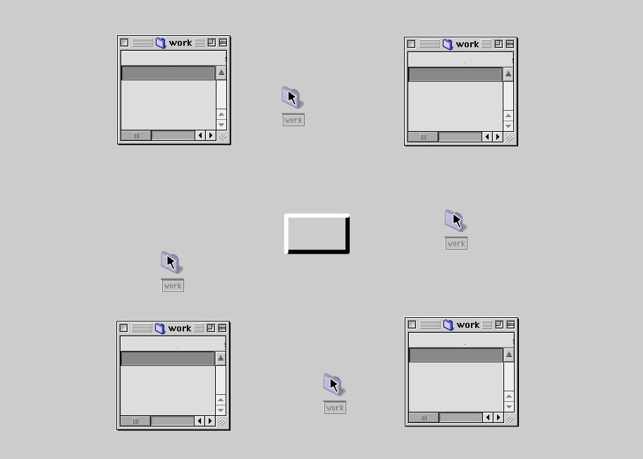

Description: This piece was originally viewable on all Operating Systems/ Web Browsers when the Flash Plugin was supported.
Download: WORK.EXE Date of release: D:04/M:02/Y:2002 Last up date: D:07/M:06/Y:2002 Proprietary Status:Copyleft Produced at: Rijksakademie van Beeldende Kunsten

Video Documentation: